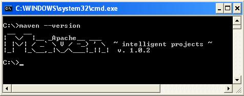
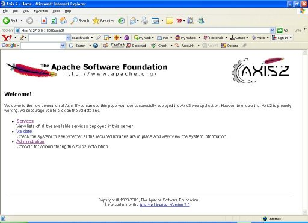

Version 1.0
Feedback: axis-dev@ws.apache.orgAxis2 is distributed in several convenient distribution packages and can be installed either as a standalone server or as part of a J2EE compliant servlet container. Axis2 is distributed under the Apache License, version 2.0. You can download Axis2 here. Latest release of Axis2 is version 1.0.
| Distribution Name | Description | Items |
|---|---|---|
| Minimal Distribution - Binary | This distribution is aimed at advanced users who will be embedding Axis2. It will contain the minimal runtime required to act as a Web Service client and/or a server (axis2-core-1.0.jar will contain compiled versions of common, xml, wsdl and core modules.) |
|
| Minimal Distribution - Source | This will contain the sources of Axis2 minimal distribution. One can generate a binary distribution from this by typing $maven dist-min-bin. (Set up Axis2 environment before running this command) |
|
| Standard Distribution - Binary | This is the complete version of Axis2 and will contain useful samples as well. Useful for some one to get familiar with Axis2. (Since WS-Addressing implementation module is engaged in to Axis2, by default, this distribution will contain addressing.mar. But the other modules that are being developed within Axis2 will not be included here and are available to be downloaded separately from here.) |
|
| Standard Distribution - Source | This will contain the sources of Axis2 standard distribution. One can generate a binary distribution from this by typing $maven dist-standard-bin. (Set up Axis2 environment before running this command) |
|
| WAR (Web Archive) Distribution | This will be the web application of Axis2 which can be deployed in most of the servlet containers. |
|
| Documents Distribution | This will contain all the documentation in one package. |
|
| Plugin Distribution | This will contain the plugins that are created for Eclipse and IDEA. |
|
| Java Runtime
Environment |
1.4 (It has not been fully tested on the latest JRE 1.5)
For instructions on setting up the JRE in different operating systems, visit http://java.sun.com |
| Maven | 1.0.2 or higher in Maven 1.x series (download). Please
download maven 1.x version. Axis2 is not compatible with maven2
yet.
Required only for building Axis2 from source distribution |
| Memory | No minimum requirement |
| Disk | No minimum requirement.
Approximately 20 MB will be used for war distribution |
| Operating system | Tested on Windows XP, Linux, Mac OS X, Fedora core, Ubuntu, Gentoo |
All the required jars are shipped with the binary distribution.
Running the Maven build will automatically download the required jars when using source distribution.
The Axis2 build is based on
Maven . Hence the only prerequisite to build Axis2 from source distribution is to have Maven installed. Extensive instruction guides are available at the Maven site.This guide however contains the easiest path for quick environment setting. Advanced users who wish to know more about Maven can visit here .
The tar ball or the zip archive is the best option. Once the archive is downloaded expand it to a directory of choice and set the environment variable MAVEN_HOME and add MAVEN_HOME/bin to the path as well. More instructions for installing Maven in Unix based operating systems can be found here .
Once maven is properly installed you can start building Axis2.
The source distribution is available as a zipped archive. All the necessary build scripts are included with the source distribution. Once the source archive is expanded into a directory of choice, moving to the particular directory and running maven command will build the Axis2 jar file.
Once the command completes, the binaries (jar files in this case) can be found at a newly created "target" directory.
Note: For the first Maven build (if the maven repository is not built first) it will take a while since required jars need to be downloaded. However this is a once only process and will not affect any successive builds.
The default maven build will however build only the Axis2 jar file. To obtain a WAR (Web Archive), "maven war" command should be issued. This will create a complete WAR with the name axis2.war inside the target directory.
Once this build step is complete, the binaries are ready to be deployed.


The Axis2 web application also provides an interface to upload services. Once a service is created according to the service specification as described in userguide that jar file can be uploaded using the upload page.

The uploaded jar files will be stored in the default service directory. For Axis2 this will be the <webapps>/axis2/WEB-INF/services directory. Once a service is uploaded it will be installed instantly.
Since Axis2 supports hot deployment one can drop the service jar directly through the file system to the above mentioned services directory.It will also cause the service to be automatically installed without the container being restarted.
Use the 'Services' link on the Web Application home page to check the successful installation of a service. The services and the operations of successfully installed services will be displayed in the available services page.

If the service has deployment time error it will list those services as faulty services. If you click on the link you can see the your deployment fault error message(s).

Deployment time error message

Axis2 Administration is all about configuring Axis2 at the run time and the configuration will be transient. More descriptions are available in Axis2 Web Administration Guide